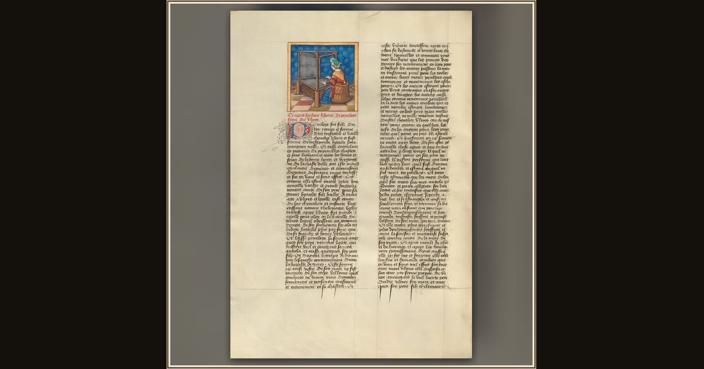

Penelope, the Wife of Ulysses, Weaving
Etienne Colaud · about 1450–1475, illumination added about 1515–1520 · The J. Paul Getty Museum · Los Angeles, USA
At her loom, clever Penelope weaves by day and unravels by night, keeping the suitors waiting for the husband she trusts will return. Explore its place in Book II of the Odyssey.